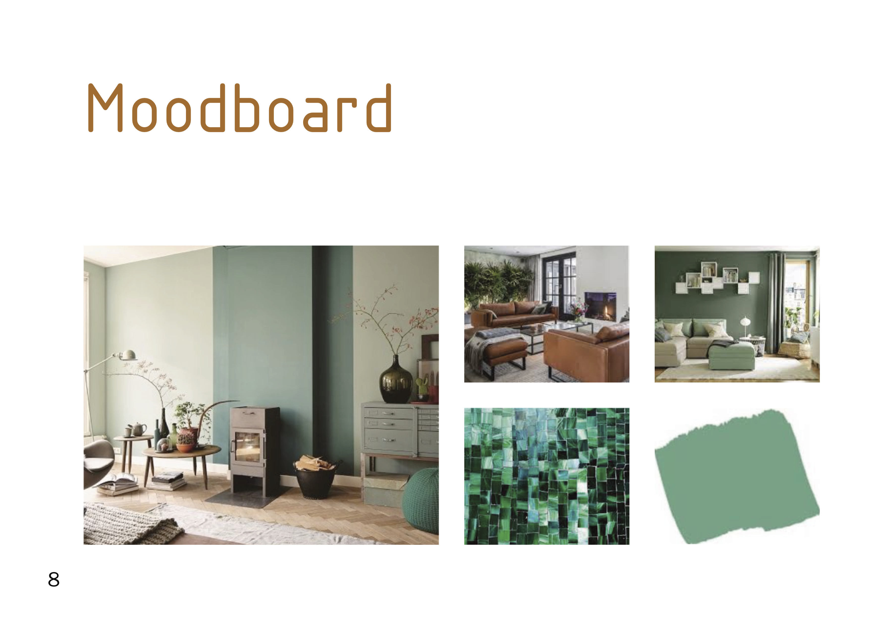
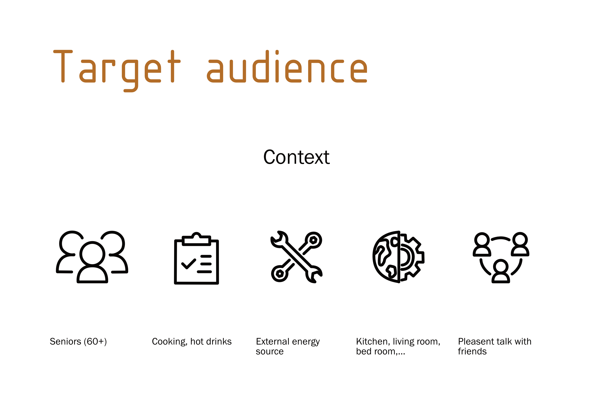
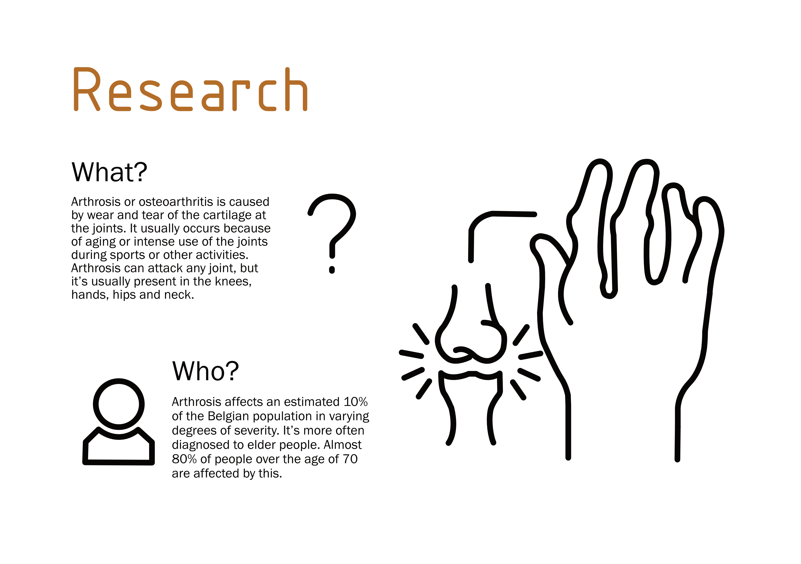
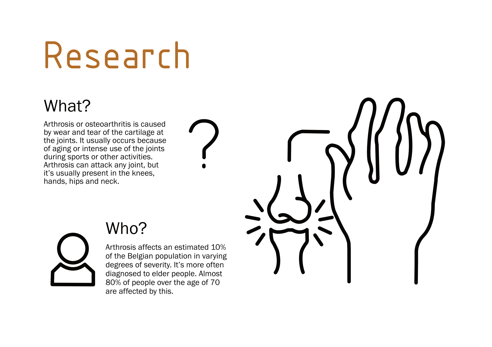
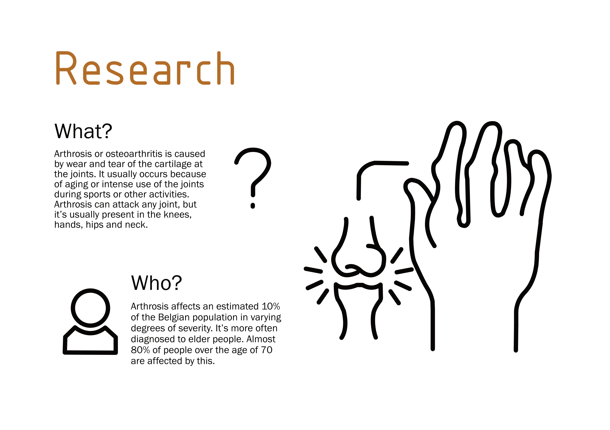

 

For my first project, I designed a water kettle that helps older people who have arthritis. I was responsible for conceiving, prototyping, and refining this design to meet the needs and preferences of the target audience. For the course Graphic Design, we made an industrial design portfolio about this project, which is a great tool to visualise the work of an industrial designer and to develop more communication skills to convey a message and connect with an audience.
You can view this portfolio by clicking on the following link or view some example pages in the photos.
